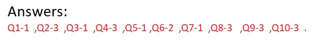

Viva Questions:
Q1. The universal gate is
1.NAND gate
2.OR gate
3.AND gate
4.None of the above
Q2. The NOR gate is OR gate followed by
1.AND gate
2.NAND gate
3.NOT gate
4.None of the above
Q3. The inverter is
1.NOT gate
2.OR gate
3.AND gate
4.None of the above
Q4. Digital circuit can be made by the repeated use of
1.OR gates
2.NOT gates
3.NAND gates
4.None of the above
Q5. The NAND gate is AND gate followed by
1.NOT gate
2.OR gate
3.AND gate
4.None of the above
Q6. The only function of NOT gate is to
1.Stop signal
2.Invert input signal
3.Act as a universal gate
4.None of the above
Q7. When an input signal 1 is applied to a NOT gate, the output is
1.0
2.1
3.Either 0 & 1
4.None of the above
Q8. A single transistor can be used to build gates.
1.OR Gate
2.NOT Gate
3.AND Gate
4.NAND Gate
Q9. The basic logic gate whose output is the complement of the input is.
1.OR gate
2.AND gate
3.INVERTER gate
4.Comparator
Q10. The inputs of a NAND gate are connected together. The resulting circuit is .
1.OR gate
2.AND gate
3.NOT gate
4.None of the above
